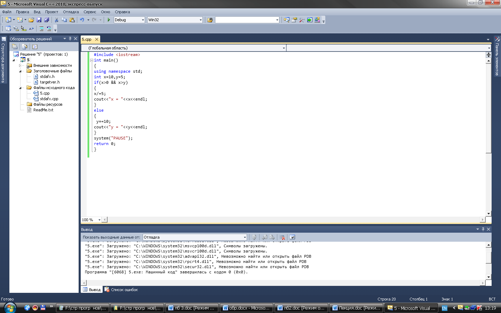
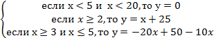
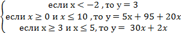
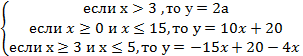
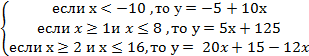
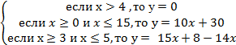
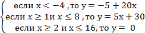
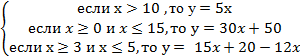

Лабораторная работа № 2
Создание программ с использованием условного оператора if –else.
Цель работы: Знакомство и получение навыков работы по созданию программ с использованием условного оператора if- else.
Материальное обеспечение: Компьютерное оборудование и программное обеспечение.
Основные понятия и определения
Оператор C++ if позволяет программам осуществлять проверку, а затем на основании этой проверки выполнять операторы необходимые для решения программы. Используя оператор if можно выполнять проверку, используя не только операции сравнения, а также используя логические операции, такие как, логическое И, логическое ИЛИ, не равно. Если результат проверки является истиной, if выполняет оператор, который следует за ним. Если результат сравнения не является истинным, программа не выводит сообщение. Программа просто завершается. Если по условиям программы необходимо выполнить два или несколько связанных операторов, необходимо сгруппировать операторы внутри левой и правой фигурных скобок. Такие операторы называются составными. Если используется только один оператор, то такой оператор называется простым. И заключение его в фигурные скобки можно не заключать.
В большинстве случаев программам потребуется указать один набор операторов, выполняющийся, если условие истинно, и второй набор, выполняющийся, если условие ложно.
Формат оператора if-else:
if (условие истинно)
{
Блок кода
}
else
{
Блок кода
}
Если в условном операторе условие выполняется, то работает блок – кода, который идет после ключевого слова if, иначе выполняется блок – кода, который идет после ключевого слова else.
По мере усложнения программ возникает необходимость в проверке сразу нескольких условий. Для выполнения таких проверок можно использовать логическую операцию C++ И (&&). Кроме того, если необходимо проверить, одно или другое условие, следует использовать логическую операцию ИЛИ (||).
Когда программа использует логическую операцию И (&&), то результат полного условия является истинным, только если все проверяемые условия истинны. Если какое-либо условие ложно, то полное условие становится ложным
При использовании логической операции ИЛИ полное условие будет истинным, если хотя бы одно условие является истинным.
Операция C++ НЕ — восклицательный знак (!) — позволяет программам проверить, является ли условие не истинным. Операция НЕ превращает ложь в истину, а истину в ложь.
Этапы выполнения программы включают следующие пункты.
1.Определяете, с какими именно библиотеками вы будете работать. В данном случае с библиотекой <iostream>. Данная библиотека обеспечивает работу потока cout. Если в программе используются математические функции (синус, косинус, возведение числа в степень или нахождение квадратного корня), то необходимо будет воспользоваться заголовочным файлом сmath.
2.Написание главной функции программы. Функция main - главная функция программы.
3.Начало тела функции. Открывается фигурная скобка.
4.Описание переменных. Определяем тип переменных, с которыми будете работать.
5.Написание условия задачи. Если условие выполняется, то работает блок – кода, который идет после ключевого слова if, иначе работает блок – кода, который идет после ключевого слова else.
6.Написание операторов программы и выражений. В данном случае используем оператор cout, чтобы вывести результат переменной на экран.
7.Конец функции. Закрывается фигурная скобка.
Методический пример. Составить блок – схему и написать программу, которая вычисляет следующие условия задачи: если (х>0 и х больше у), то выполняется присваивание с делением. Иначе выполнить присваивание со сложением для переменной у.
начало
x, y
x>0 && x>y
да нет
x+=10 x/=5
x
y
конец

Результат программы: 2 (если условие истинно) 20 (если условие ложно)
Варианты заданий:
1.Написать программу, которая проверяет следующие условия задачи.

2.Написать программу, которая проверяет следующие условия задачи.

3.Написать программу, которая проверяет следующие условия задачи.

4.Написать программу, которая проверяет следующие условия задачи.

5.Написать программу, которая проверяет следующие условия задачи.

6.Написать программу, которая проверяет следующие условия задачи.

7.Написать программу, которая проверяет следующие условия задачи.

Порядок выполения работы:
1.Изучить теоретические сведения по данной лабораторной работе.
2.Составить программу для заданного варианта.
3.Записать программу на языке Visual C++.
4.Отладить программу.
5.Продемонстрировать работу программы на ПК для заданного варианта.
Содержание отчета:
1.Тема и цель работы.
2.Вариант задания.
3.Блок – схема исходной задачи.
4.Листинг и результат программы.
5.Контрольные вопросы.
Контрольные вопросы:
1.Какой оператор позволяет программам осуществлять проверку?
2.Какой оператор называется простым, а какой составным? В чем их отличие?
3.Как можно осуществить проверку двух или более условий?
Литература:
1.Хортон А. Visual 2010: полный курс.:Пер. с анг.-М.:ООО «И.Д.Вильямс», 2011г , 1216 с.: ил.
2.Пахомов Б.И. С/C++ и MS Visual C++ 2010 для начинающих. – СПб.:БХВ-Петербург, 2011.-736 с.:ил.
3.Зиборов В. В. MS Visual C++ 2010 в среде.NET. Библиотека программиста. — СПб.: Питер,
2012. — 320 с.: ил.
4.Прохоренок Н.А. Программирование на С++ в Visual Studio 2010 Express, - СПб.: Питер, 2011г , 71 с.: ил.
5.Степаненко О.Е. VisualC++.NET.Классикапрограммирования.:-М:Научнаякнига,К.;Бу-кипист,2010.—768с.